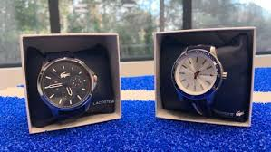
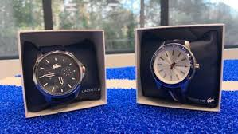

Servicios
Todos
nuestros servicios son supervisados y manipulados por un relojero
certificado. Utilizamos las nuevas tecnologías y herramientas
especializadas, que se actualizan constantemente para ofrecer el
servicio de fábrica de calibre para una creciente lista de compañías de
relojes. Nuestro equipo de relojeros están altamente cualificados y su
nivel de experiencia asegura que lo que su reloj necesita se realizará
con el máximo cuidado y sujeto a las normas de los fabricantes.
 

Reparación y mantenimiento de relojes de pulseraServicio completo de reacondicionamiento
- Servicio de mantenimiento
- Servicio básico y completo de sustitución de pilas para relojes de Cuarzo
- Pulido de Caja y pulsera
- Sustitución de tija, corona y cristal
- Sustitución de la correa o pulsera
- Servicio de cambio de horas
- Limpieza
Nuestros Productos